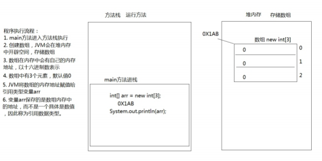
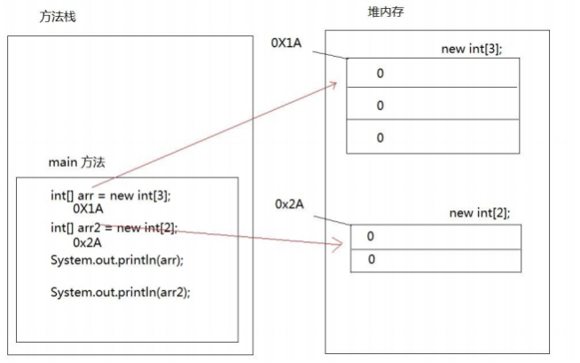
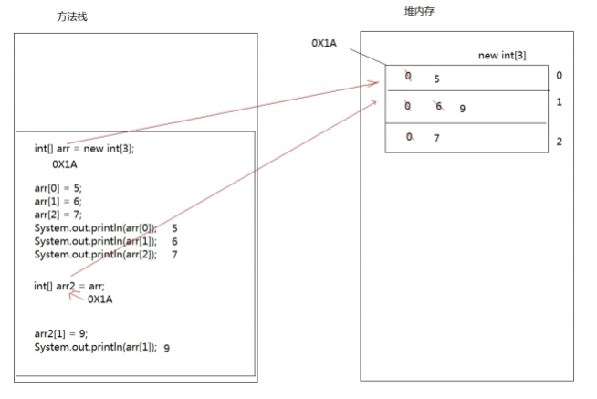
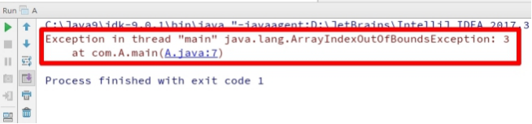
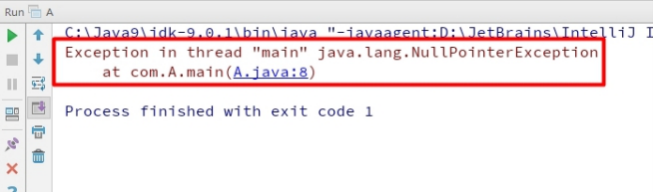
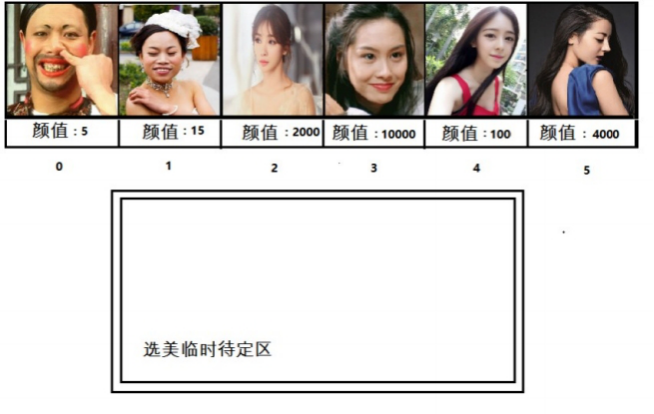
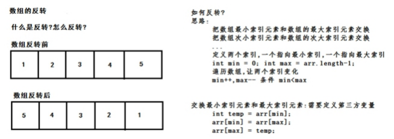
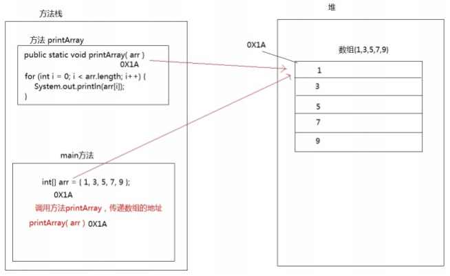
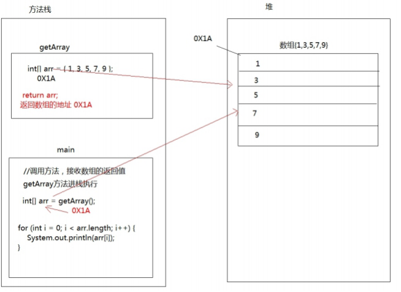

day05【数组】今日内容教学目标第一章 数组定义和访问1.1 容器概述案例分析容器概念1.2 数组概念方式一方式二方式三1.4 数组的访问第二章 数组原理内存图2.1 内存概述2.2 Java虚拟机的内存划分2.3 数组在内存中的存储一个数组内存图两个数组内存图两个变量指向一个数组第三章 数组的常见操作 3.1 数组越界异常3.2 数组空指针异常3.3 数组遍历【重点】3.4 数组获取最大值元素3.5 数组反转第四章 数组作为方法参数和返回值4.1 数组作为方法参数4.2 数组作为方法返回值4.3 方法的参数类型区别 代码分析1. 分析下列程序代码，计算输出结果。2. 分析下列程序代码，计算输出结果。
day05【数组】
今日内容
- 数组概念
- 数组的定义
- 数组的索引
- 数组内存
- 数组的遍历
- 数组的最大值获取
- 数组反转
- 数组作为方法参数和返回值
教学目标
理解容器的概念
掌握数组的第一种定义方式
掌握数组的第二种定义方式
掌握数组的第三种定义方式
使用索引访问数组的元素
了解数组的内存图解
了解空指针和越界异常
掌握数组的遍历
掌握数组最大值的获取
了解数组反转的原理
了解数组作为方法参数传递
了解数组作为方法的返回值
第一章 数组定义和访问
1.1 容器概述
案例分析
现在需要统计某公司员工的工资情况，例如计算平均工资、找到最高工资等。假设该公司有50名员工，用前面所学 的知识，程序首先需要声明50个变量来分别记住每位员工的工资，然后在进行操作，这样做会显得很麻烦，而且错 误率也会很高。因此我们可以使用容器进行操作。将所有的数据全部存储到一个容器中，统一操作。
容器概念
- 容器：是将多个数据存储到一起，每个数据称为该容器的元素。
- 生活中的容器：水杯，衣柜，教室
1.2 数组概念
- 数组概念： 数组就是存储数据长度固定的容器，保证多个数据的数据类型要一致。 1.3 数组的定义
方式一
- 格式： 数组存储的数据类型[] 数组名字 = new 数组存储的数据类型[长度];
- 数组定义格式详解： 数组存储的数据类型： 创建的数组容器可以存储什么数据类型。 [] : 表示数组。 数组名字：为定义的数组起个变量名，满足标识符规范，可以使用名字操作数组。 new：关键字，创建数组使用的关键字。 数组存储的数据类型： 创建的数组容器可以存储什么数据类型。 [长度]：数组的长度，表示数组容器中可以存储多少个元素。 注意：数组有定长特性，长度一旦指定，不可更改。 和水杯道理相同，买了一个2升的水杯，总容量就是2升，不能多也不能少。
- 举例： 定义可以存储3个整数的数组容器，代码如下：
int[] arr = new int[3];方式二
- 格式： 数据类型[] 数组名 = new 数据类型[]{元素1,元素2,元素3...};
- 举例： 定义存储1，2，3，4，5整数的数组容器。
xxxxxxxxxxint[] arr = new int[]{1,2,3,4,5};方式三
- 格式： 数据类型[] 数组名 = {元素1,元素2,元素3...}; 举例： 定义存储1，2，3，4，5整数的数组容器
xxxxxxxxxxint[] arr = {1,2,3,4,5};1.4 数组的访问
- 索引： 每一个存储到数组的元素，都会自动的拥有一个编号，从0开始，这个自动编号称为数组索引 (index)，可以通过数组的索引访问到数组中的元素。
- 格式： 数组名[索引]
- 数组的长度属性： 每个数组都具有长度，而且是固定的，Java中赋予了数组的一个属性，可以获取到数组的 长度，语句为： 数组名.length ，属性length的执行结果是数组的长度，int类型结果。由次可以推断出，数 组的最大索引值为 数组名.length-1 。
xxxxxxxxxxpublic static void main(String[] args) { int[] arr = new int[]{1,2,3,4,5}; //打印数组的属性，输出结果是5 System.out.println(arr.length); }- 索引访问数组中的元素： 数组名[索引]=数值，为数组中的元素赋值 变量=数组名[索引]，获取出数组中的元素
xxxxxxxxxxpublic static void main(String[] args) { //定义存储int类型数组，赋值元素1，2，3，4，5 int[] arr = {1,2,3,4,5}; //为0索引元素赋值为6 arr[0] = 6; //获取数组0索引上的元素 int i = arr[0]; System.out.println (i); //直接输出数组0索引元素 System.out.println (arr[0]);}第二章 数组原理内存图
2.1 内存概述
内存是计算机中的重要原件，临时存储区域，作用是运行程序。我们编写的程序是存放在硬盘中的，在硬盘中的程序是不会运行的，必须放进内存中才能运行，运行完毕后会清空内存。 Java虚拟机要运行程序，必须要对内存进行空间的分配和管理。
2.2 Java虚拟机的内存划分
为了提高运算效率，就对空间进行了不同区域的划分，因为每一片区域都有特定的处理数据方式和内存管理方式。
- JVM的内存划分：
| 区域名称 | 作用 |
|---|---|
| 寄存器 | 给CPU使用，和我们开发无关。 |
| 本地方法栈 | JVM在使用操作系统功能的时候使用，和我们开发无关。 |
| 方法区 | 存储可以运行的class文件。 |
| 堆内存 | 存储对象或者数组，new来创建的，都存储在堆内存。 |
| 方法栈 | 方法运行时使用的内存，比如main方法运行，进入方法栈中执行。 |
2.3 数组在内存中的存储
一个数组内存图
xxxxxxxxxx public static void main(String[] args) { int[] arr = new int[3]; System.out.println (arr);//[I@5f150435}以上方法执行，输出的结果是[I@5f150435，这个是什么呢？是数组在内存中的地址。new出来的内容，都是在堆内存中存储的，而方法中的变量arr保存的是数组的地址。 输出arr[0]，就会输出arr保存的内存地址中数组中0索引上的元素 
两个数组内存图
xxxxxxxxxx public static void main(String[] args) { int[] arr = new int[3]; int[] arr2 = new int[2]; System.out.println (arr); System.out.println (arr2);}
两个变量指向一个数组
xxxxxxxxxx public static void main(String[] args) { // 定义数组，存储3个元素 int[] arr = new int[3]; //数组索引进行赋值 arr[0] = 5; arr[1] = 6; arr[2] = 7; //输出3个索引上的元素值 System.out.println (arr[0]); System.out.println (arr[1]); System.out.println (arr[2]); //定义数组变量arr2，将arr的地址赋值给arr2 int[] arr2 = arr; arr2[1] = 9; System.out.println (arr[1]);}
第三章 数组的常见操作
3.1 数组越界异常
观察一下代码，运行后会出现什么结果。
xxxxxxxxxx public static void main(String[] args) { int[] arr = {1,2,3}; System.out.println (arr[3]);}创建数组，赋值3个元素，数组的索引就是0，1，2，没有3索引，因此我们不能访问数组中不存在的索引，程序运 行后，将会抛出 ArrayIndexOutOfBoundsException 数组越界异常。在开发中，数组的越界异常是不能出现的，一 旦出现了，就必须要修改我们编写的代码。 
3.2 数组空指针异常
观察一下代码，运行后会出现什么结果。
xxxxxxxxxx public static void main(String[] args) { int[] arr = {1,2,3}; arr = null; System.out.println (arr[0]);｝arr = null 这行代码，意味着变量arr将不会在保存数组的内存地址，也就不允许再操作数组了，因此运行的时候 会抛出 NullPointerException 空指针异常。在开发中，数组的越界异常是不能出现的，一旦出现了，就必须要修 改我们编写的代码。

空指针异常在内存图中的表现

3.3 数组遍历【重点】
- 数组遍历： 就是将数组中的每个元素分别获取出来，就是遍历。遍历也是数组操作中的基石。
xxxxxxxxxxpublic static void main(String[] args) { int[] arr = {1,2, 3, 4, 5 }; System.out.println (arr[0]); System.out.println (arr[1]); System.out.println (arr[2]); System.out.println (arr[3]); System.out.println (arr[4]);}以上代码是可以将数组中每个元素全部遍历出来，但是如果数组元素非常多，这种写法肯定不行，因此我们需要改 造成循环的写法。数组的索引是 0 到 lenght-1 ，可以作为循环的条件出现。
xxxxxxxxxx public static void main(String[] args) { int[] arr = {1,2, 3, 4, 5 }; for (int i = 0;i < arr.length; i++) { System.out.println(arr[i]); }}3.4 数组获取最大值元素
- 最大值获取：从数组的所有元素中找出最大值。
- 实现思路： 定义变量，保存数组0索引上的元素 遍历数组，获取出数组中的每个元素 将遍历到的元素和保存数组0索引上值的变量进行比较 如果数组元素的值大于了变量的值，变量记录住新的值 数组循环遍历结束，变量保存的就是数组中的最大值 
xxxxxxxxxxpublic static void main(String[] args) { int[] arr = {5,15, 2000, 10000, 100, 4000 }; //定义变量，保存数组中0索引的元素 int max = arr[0]; //遍历数组，取出每个元素 for (int i = 0;i < arr.length; i++) { //遍历到的元素和变量max比较 //如果数组元素大于max if (arr[i] > max) { //max记录住大值 max = arr[i]; } } System.out.println ("数组最大值是： " + max); }3.5 数组反转
数组的反转： 数组中的元素颠倒顺序，例如原始数组为1,2,3,4,5，反转后的数组为5,4,3,2,1
实现思想：数组最远端的元素互换位置。 实现反转，就需要将数组最远端元素位置交换 定义两个变量，保存数组的最小索引和最大索引 两个索引上的元素交换位置 最小索引++，最大索引--，再次交换位置 最小索引超过了最大索引，数组反转操作结束
xxxxxxxxxxpublic static void main(String[] args) { int[] arr = {1,2, 3, 4, 5 }; /* 循环中定义变量min=0最小索引 max=arr.length‐1最大索引 min++,max‐‐ */ for (int min = 0,max = arr.length ‐ 1;min <= max; min++, max‐‐) { //利用第三方变量完成数组中的元素交换 int temp = arr[min]; arr[min] = arr[max]; arr[max] = temp; } // 反转后，遍历数组 for (int i = 0;i < arr.length; i++) { System.out.println(arr[i]); }}
第四章 数组作为方法参数和返回值
4.1 数组作为方法参数
以前的方法中我们学习了方法的参数和返回值，但是使用的都是基本数据类型。那么作为引用类型的数组能否作为 方法的参数进行传递呢，当然是可以的。
- 数组作为方法参数传递，传递的参数是数组内存的地址。
xxxxxxxxxxpublic static void main(String[] args) { int[] arr = {1,3, 5, 7, 9 }; //调用方法，传递数组 printArray (arr);}/* 创建方法，方法接收数组类型的参数 进行数组的遍历*/public static void printArray(int[] arr) { for (int i = 0;i < arr.length; i++) { System.out.println(arr[i]); }}
4.2 数组作为方法返回值
- 数组作为方法的返回值，返回的是数组的内存地址
xxxxxxxxxxpublic static void main(String[] args) { //调用方法，接收数组的返回值 //接收到的是数组的内存地址 int[] arr = getArray(); for (int i = 0;i < arr.length; i++) { System.out.println(arr[i]); }}/*创建方法，返回值是数组类型 创建方法，返回值是数组类型 return返回数组的地址*/public static int[] getArray() { int[] arr = {1,3, 5, 7, 9 }; //返回数组的地址，返回到调用者 return arr;}
4.3 方法的参数类型区别
代码分析
1. 分析下列程序代码，计算输出结果。
xxxxxxxxxx public static void main(String[] args) { int a = 1; int b = 2; System.out.println (a); System.out.println (b); change(a, b); System.out.println (a); System.out.println (b);} public static void change(int a,int b) { a = a + b; b = b + a;}2. 分析下列程序代码，计算输出结果。
xxxxxxxxxx public static void main(String[] args) { int[] arr = {1,3,5}; System.out.println (arr[0]); change(arr); System.out.println (arr[0]);} public static void change(int[] arr) { arr[0] = 200;}总结: 方法的参数为基本类型时,传递的是数据值. 方法的参数为引用类型时,传递的是地址值.